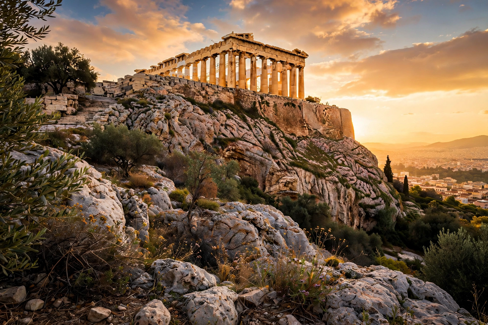

| Acropolis of Athens | |
 The Parthenon on the Acropolis | |
| Location | Athens, Greece |
|---|---|
| Elevation | 156 m (512 ft) above sea level |
| Principal buildings | Parthenon, Propylaea, Erechtheion, Temple of Athena Nike |
| Status | UNESCO World Heritage Site (1987) |
The Acropolis of Athens (Ancient Greek: Ἀκρόπολις, "high city") is an ancient citadel on a rocky outcrop above the city of Athens, Greece. It contains the remains of several ancient buildings of great architectural and historical significance, the most famous being the Parthenon. The hill was inhabited from Neolithic times and served as a fortified citadel and religious sanctuary for millennia.
During the Mycenaean period the Acropolis was ringed by massive Cyclopean walls and held a royal palace. After the Persian sack of Athens in 480 BC, the Athenians initially left the ruins as a memorial; then, under Pericles, an ambitious building programme from 447 BC transformed the plateau into a marble sanctuary of Athena, funded by the treasury of the Delian League. The architects Iktinos and Kallikrates built the Parthenon, Mnesikles the monumental Propylaea gateway, and work continued with the Erechtheion and the Temple of Athena Nike.
The buildings served successively as churches and, under Ottoman rule, a mosque and garrison. In 1687 a Venetian shell ignited the gunpowder stored in the Parthenon, blowing off its roof. In the early 19th century Lord Elgin removed many sculptures — the Parthenon marbles — now controversially held by the British Museum. Since Greek independence, and intensively since 1975, a major restoration programme has conserved the monuments; the nearby Acropolis Museum opened in 2009.